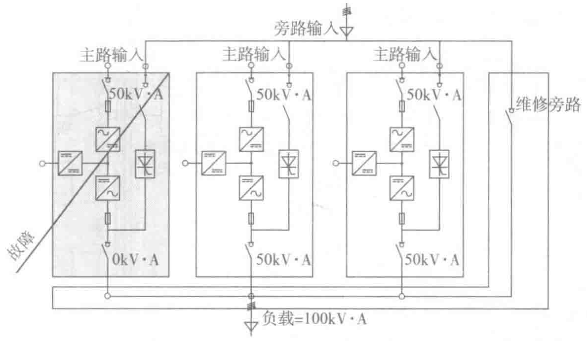
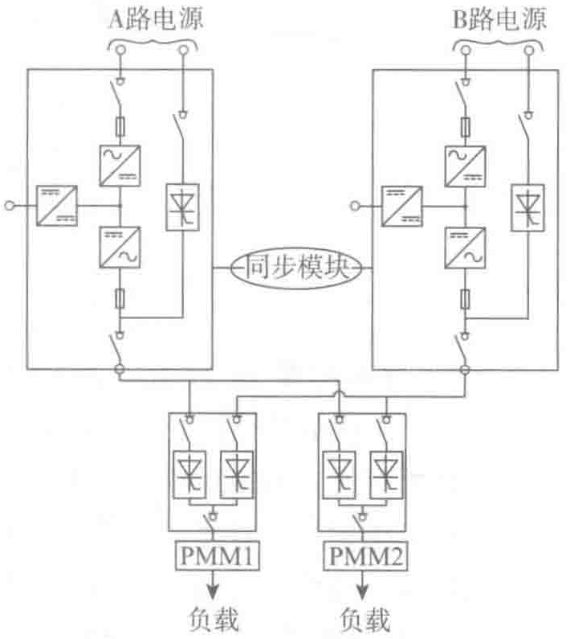

（4）由静态切换开关（STS）组成的分布式冗余
所有的负载都能由两路或多路独立的UPS电源供电（图3-21所示为两个独立的单机UPS），每一路UPS系统也可以由几个并联的UPS单元组成主动冗余系统。使用静态切换开关（STS）确保了负载在两路电源之间的自主选择性，即使负荷发生故障（避免了故障扩散的任何可能性）或维护时也能实现这种选择性的切换。
电力管理模块PMM能够用来完善这种分布式配置，它提供了：
- 对负载的管理性；
- 对负载的多路供电（来自不同的电源）；
- 对电气系统进行部分隔离来进行维护或升级。

这种配置确保了非常高的可用性等级，并提供了多种升级电气系统的可能性。
3. 选择UPS电源系统的配置
（1）标准配置1：双转换单机UPS
图3-22所示是UPS配置的基本方案。双转换UPS无论市电的干扰达到何种程度均能提供高质量的电压。
- 可用性：99.9979%，MTBF达475000h，而市电的MTBF仅为96h。
- 可维护性：非常容易，因为内置的维修旁路在服务期间能继续为负载供电。
- 可升级性：在现场就能实现扩容到多台并联UPS单元。